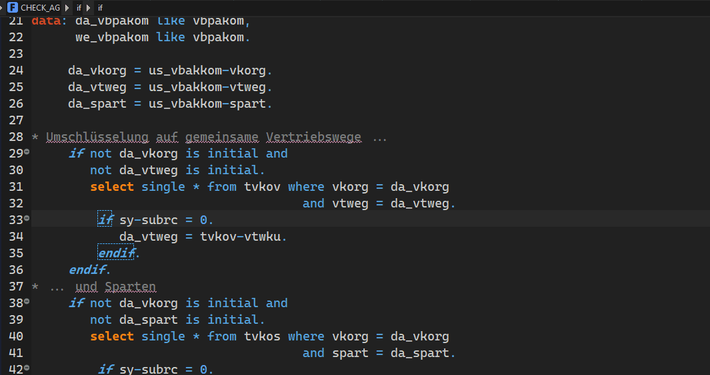
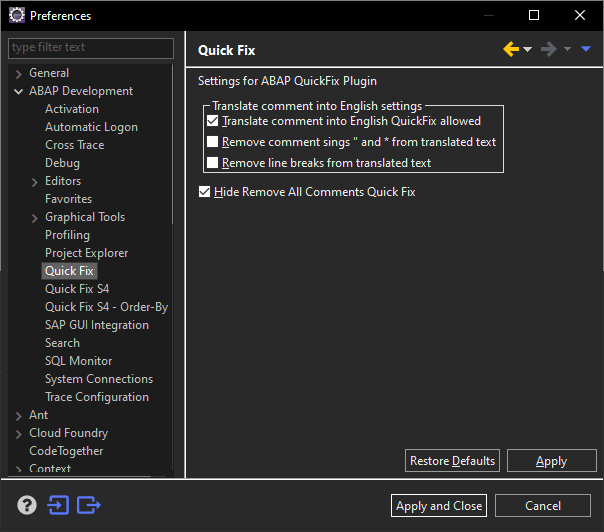

ABAP Quick Fixes - Translate comments into English
If you'll find in your ABAP code, comments that are written in foreign language, you can always use this quick fix to preview or to translate it into English.
Translation is done via Google Translator in the background call, source language is detected automatically. 
In case of communication error to the service, the quick fix is switched off in the future calls, until the restart of Eclipse takes place.
It can be also switched off manually in Preferences.
